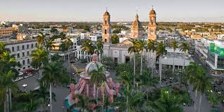
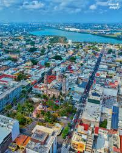

Información del lugar


Tampico es uno de los puertos más importantes de México. Su ubicación junto al Golfo de México lo convierte en un destino turístico atractivo.
La ciudad destaca por su arquitectura estilo europeo, especialmente en el centro histórico.